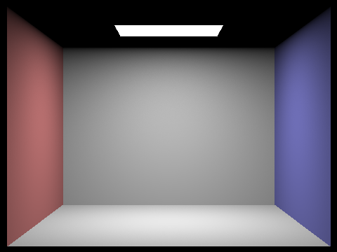
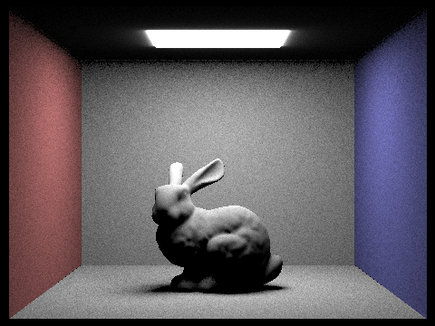

In this project, I implemented some algorithm relate to Ray Tracing and Light. These algorithm include Ray Generation. multiple light sample for one picture, Ray-Triangle Intersection and Ray-Sphere Intersection. These algorithm also include Bounding Volume Hierarchy construction algorithm, Direct Illumination trace algorithm including the Direct Lighting with Uniform Hemisphere Sampling and Direct Lighting by Importance Sampling Lights. I also implemented the algorithm to generate Global Illumination. At last, I implemented the adaptive sampling algorithm to avoid the problem of using a fixed (high) number of samples per pixel, by concentrating the samples in the more difficult parts of the image.
Part 1: Ray Generation and Intersection
1, The Ray Generation algorithm
Because the coordinate in the original image range from (0, 0) to (1, 1), bute the coordinate in the image sensor of the camera range from ( - tan(hFov/2), - tan(vFov/2) ) to ( tan(hFov/2), tan(vFov/2) ), so that we should make a coordinate transform.
Suppose that the coordinate in the original image is (x, y), then the coordinate in the image sensor of the camera is ( (x - 0.5) * 2 * tan(hFov/2), (y - 0.5) * 2 * tan(vFov/2) ). The ray direction in the camera space is ( (x - 0.5) * 2 * tan(hFov/2), (y - 0.5) * 2 * tan(vFov/2), -1 ). So that the ray direction in the world space is c2w * ( (x - 0.5) * 2 * tan(hFov/2), (y - 0.5) * 2 * tan(vFov/2), -1 )
From the above formula and a world space camera position, we can make a ray.
In order to generate the pixel samples, for each pixel position we generate ns_aa pixel samples. The average value of the ns_aa pixel samples will be the pixel sample value for the position value. To generate each pixel sample value, we call the camera's generate_ray function with the parameter (x/width, y/height) to generate a ray and call the PathTracer's est_radiance_global_illumination function to calculate the pixel sample value.
Following is the screenshot of the effect after a implement the above two task:
2, Ray-Triangle Intersection:
From the Moller Trumbore below:
We can calculate the value t, b1 and b2. We let b0 = (1 - b1 - b2). If any of the value b0, b1 or b2 is not in the range of [0, 1], then the ray does not intersect with the triangle. If the value of t is not in the range of [ray.min_t, ray.max_t], then the ray also does not intersect with the triangle. The normal of the intersection point in the triangle plane can be calculate by the Barycentric Formula, it it: n = b0 * n0 + b1 * n1 + b2 * n2.
Following is the screenshot of the effect after a implement the Ray-Triangle Intersection algorithm:
3, Ray-Sphere Intersection:
In the Sphere's test function, we can calculate the value b^2 - 4ac as below:
If b^2 - 4ac < 0, then the ray does not intersect with the Sphere. Otherwise we can calculate two t value and set the smaller one to t1, and set the larger one to t2.
After we calculate the two t value in the Sphere's test function, we will check whether the t value is greater than zero and in the range of [ray.min_t, ray.max_t]. If both t value does not satisfy these condiction, then the ray also does not intersect with the Sphere. Otherwise, we choose the smaller satisfied t value as the value of t. The normal of the intersection point in the Sphere is o + td - c
Following is the screenshot of the effect after a implement the Ray-Sphere Intersection algorithm:
Part 2: Bounding Volume Hierarchy
In order to Construct the BVH, my algorithm try to find the best split plane along the x axis, y axis and z axis. For each axis, I split the spatial extent of primitives into 32 buckets. For each of the 31 possible partitioning planes I evaluate the Surface Area Heuristic as the cost and select the partitioning plane that result the lowest cost as the split plane. The flow of my split algorithm is as follow:
Before I apply the Bounding Volume Hierarchy algorithm, When execute the ./pathtracer -t 8 -r 800 600 -f cow.png ../dae/meshedit/cow.dae command to generate the cow with basic normal shading, it take above 30 second as below:
After I apply the Bounding Volume Hierarchy algorithm, When execute the ./pathtracer -t 8 -r 800 600 -f cow.png ../dae/meshedit/cow.dae command to generate the cow with basic normal shading, it take above 0.06 second as below:
After I apply the Bounding Volume Hierarchy algorithm, When execute the ./pathtracer -t 8 -r 800 600 -f maxplanck.png ../dae/meshedit/maxplanck.dae command to generate the human head with basic normal shading, it take above 0.075 second as below:
After I apply the Bounding Volume Hierarchy algorithm, When execute the ./pathtracer -t 8 -r 800 600 -f CBlucy.png ../dae/sky/CBlucy.dae command, it take above 0.0408 second as below:
Part 3: Direct Illumination
The return value of the DiffuseBSDF::f function is the albedo divide by PI.
The return value of the PathTracer::zero_bounce_radiance is the emitted radiance value of the bsdf ( isect.bsdf->get_emission() ).
In order to implement the Direct Lighting with Uniform Hemisphere Sampling algorithm, for each area light I sample ns_area_light light ray to calculate ns_area_light lighting. I use the UniformHemisphereSampler3D::get_sample() function to sample each light ray's direction. For each light ray, in order to check that whether the light is behind the surface at the hit point, we assume that the angle between the direction of the outgoing light and the direction of the normal of the surface at the hit point is out, we also assume that the angle between the reverse direction of the incoming light and the direction of the normal of the surface at the hit point is theta, if cos(out) * cos(theta) < 0, then the light is behind the surface at the hit point. If the light is not behind the surface at the hit point and the light ray intersects a light source, then the radiance value of this incoming light will be the emitted radiance value of that light source. The probability density function of the Uniform Hemisphere is 1 / (PI * 2). We can use the BSDF::f() * radiance * cos(theta) / pdf to calculate the outgoing radiance value of this light ray. The average radiance value of the ns_area_light light ray will be the radiance value of the Direct Lighting.
In order to implement the Direct Lighting by Importance Sampling Lights algorithm, for each area light I sample ns_area_light light ray to calculate ns_area_light lighting. I use the SceneLight::sample_L() function to sample each light ray's direction , the radiance value of the incoming light and the probability density function. For each light ray, in order to check that whether the light is behind the surface at the hit point, we assume that the angle between the direction of the outgoing light and the direction of the normal of the surface at the hit point is out, we also assume that the angle between the reverse direction of the incoming light and the direction of the normal of the surface at the hit point is theta, if cos(out) * cos(theta) < 0, then the light is behind the surface at the hit point. If the light is not behind the surface at the hit point and the light ray does not intersects any object in the scene, then we can use the BSDF::f() * radiance * cos(theta) / pdf to calculate the outgoing radiance value of this light ray. The average radiance value of the ns_area_light light ray will be the radiance value of the Direct Lighting.
Following is the screenshot of the effect after a implement the above two Direct Lighting Sampling algorithm (with 32 light rays (the -l flag) and with 64 sample per pixel (the -s flag) :
|
Direct Lighting with Uniform Hemisphere Sampling algorithm
|

Direct Lighting by Importance Sampling Lights algorithm
|
|

Direct Lighting with Uniform Hemisphere Sampling algorithm
|
Direct Lighting by Importance Sampling Lights algorithm
|
|
Direct Lighting with Uniform Hemisphere Sampling algorithm
|
Direct Lighting by Importance Sampling Lights algorithm
|
 Direct Lighting with Uniform Hemisphere Sampling algorithm
Direct Lighting with Uniform Hemisphere Sampling algorithm
|
Direct Lighting by Importance Sampling Lights algorithm
|
From the effect shown above, we can see that the Direct Lighting with Uniform Hemisphere Sampling algorithm contain quite a lot more noisy than the Direct Lighting by Importance Sampling Lights algorithm. This is because that in the Direct Lighting with Uniform Hemisphere Sampling algorithm, the light ray are sample randomly from the hit point, so that a lot of light ray will not intersect with the light source, this will generate a lot of noise. By contrary, in the Direct Lighting by Importance Sampling Lights algorithm，the light ray are sample randomly between the light source and the hit point, so that as well as the light ray not intersect with any object between the hit point and the light source, the light will cast in the surface, this will reduce quite a lot of noise.
Following is the screenshot of the effect of the Direct Lighting by Importance Sampling Lights algorithm:
|
with 1 light rays (the -l flag) and with 1 sample per pixel (the -s flag)
|
with 4 light rays (the -l flag) and with 1 sample per pixel (the -s flag)
|
|
with 16 light rays (the -l flag) and with 1 sample per pixel (the -s flag)
|
with 64 light rays (the -l flag) and with 1 sample per pixel (the -s flag)
|
From the effect shown above, we can see that when we increase the number of the light rays, we can reduce the noise. This is because when we increase the number of the light rays, the random sample will converge to a steady state.
Part 4: Global Illumination
In my implement of the Global Illumination generate algorithm, I first call the one_bounce_radiance to generate the direct lighting. if the remainder depth is greater than 1 and the calling of coin_flip function with the cpdf as parameter return true, I call the BSDF::sample_f function to sample a random light ray direction and the probability density function. For the light ray we just sample, in order to check that whether the light is behind the surface at the hit point, we assume that the angle between the direction of the outgoing light and the direction of the normal of the surface at the hit point is out, we also assume that the angle between the reverse direction of the incoming light and the direction of the normal of the surface at the hit point is theta, if cos(out) * cos(theta) < 0, then the light is behind the surface at the hit point. If the light is not behind the surface at the hit point and the light ray intersects an object in the scene, then we call the at_least_one_bounce_radiance function recursive to get the radiance value indirect reflected from the intersect object. At last we call the BSDF::f() * radiance * cos(theta) / pdf / cpdf to calculate the outgoing indirect lighting radiance value of this light ray. The sum of the direct lighting radiance value and the indirect lighting radiance value will be the global Illumination radiance value.
Following is the screenshot of the effect after I implement the above Global Illumination generate algorithm (with 1 light rays (the -l flag) and with 1024 sample per pixel (the -s flag) and max depth = 6:
Following is the screenshot of the effect with only direct illumination or only indirect illumination:
|
only direct illumination
|
only indirect illumination
|
|
only direct illumination
|
only indirect illumination
|
|
only direct illumination
|
only indirect illumination
|
Following is the screenshot of the effect with different max_ray_depth (with 1 light rays (the -l flag) and with 1024 sample per pixel:
 max_ray_depth = 0
max_ray_depth = 0
|
max_ray_depth = 1
|
 max_ray_depth = 2
max_ray_depth = 2
|
max_ray_depth = 3
|
max_ray_depth = 100
|
Following is the screenshot of the effect with different sample-per-pixel rates (with 4 light rays (the -l flag) and max depth = 100:
|
sample-per-pixel rates = 1
|
sample-per-pixel rates = 2
|
sample-per-pixel rates = 4
|
|
sample-per-pixel rates = 8
|
sample-per-pixel rates = 16
|
sample-per-pixel rates = 64
|
sample-per-pixel rates = 1024
|
Part 5: Adaptive Sampling
In order to implement the Adaptive Sampling algorithm, in the PathTracer::raytrace_pixel function, for each step in the sample iteration, we call the Vector3D::illum function to calculate the value xk, then accumulate the value of s1 and s2 as below:
When the value of sample number % samplesPerBatch become 0, we calculate the mean and variance as below:
When the value of sample number % samplesPerBatch become 0, we calculate the value of I as below:
When the I satisfy the condition below, we break out from the sample iteration, calculate the average Illumination and update the sampleBuffer and the sampleCountBuffer.
Following is the screenshot of the effect after I implement the above Adaptive Sampling (with 1 light rays (the -l flag) and with 2048 sample per pixel (the -s flag) and max depth = 100: